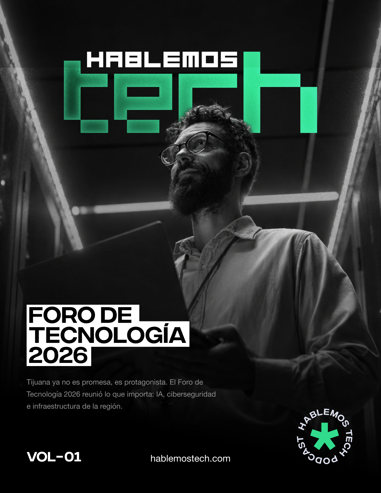
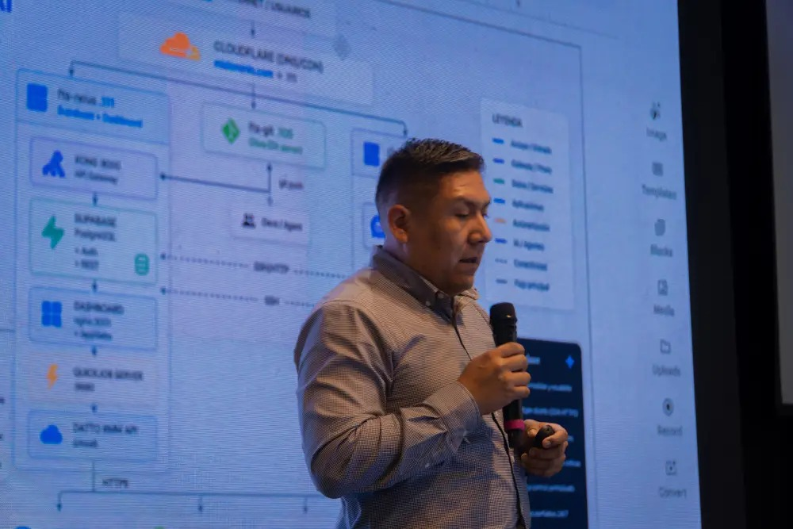
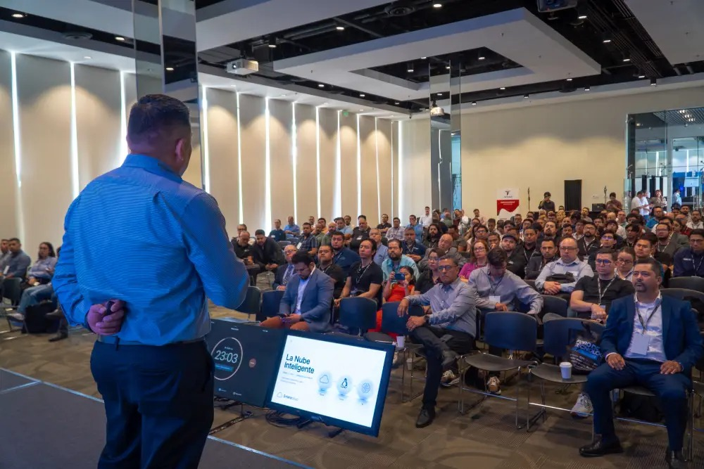
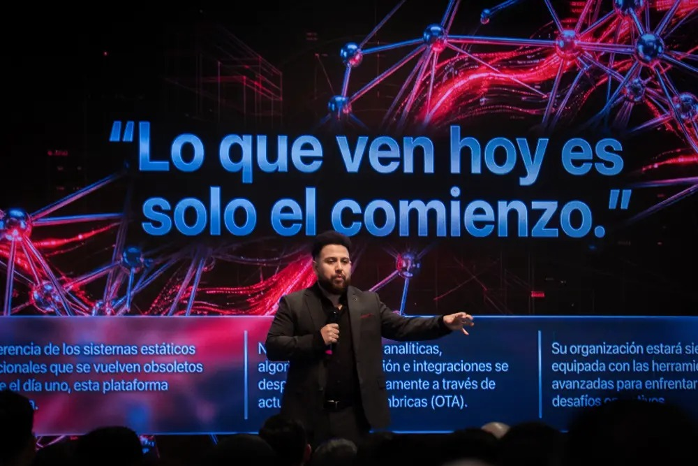
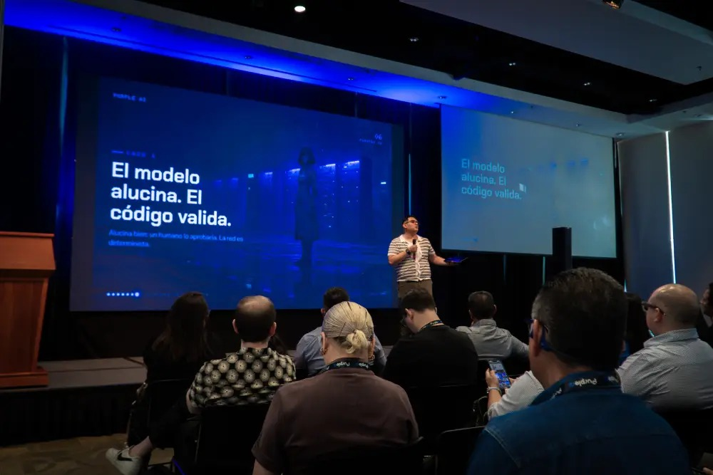
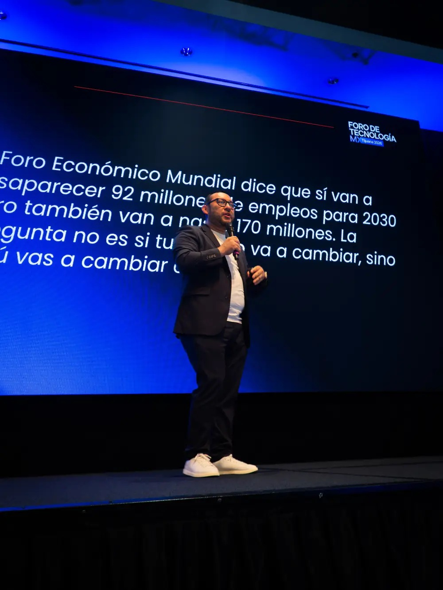
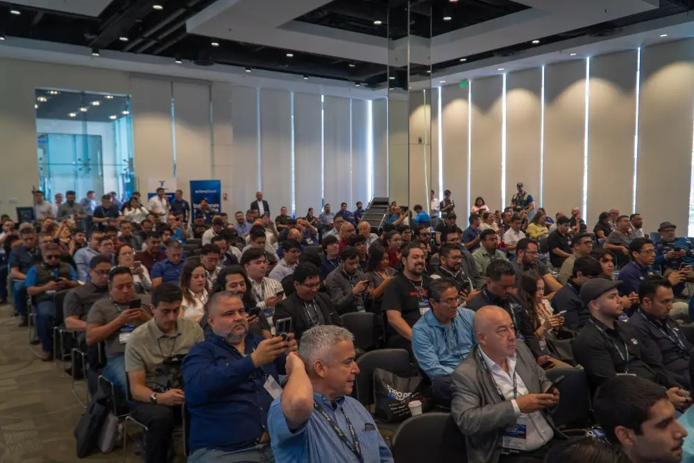
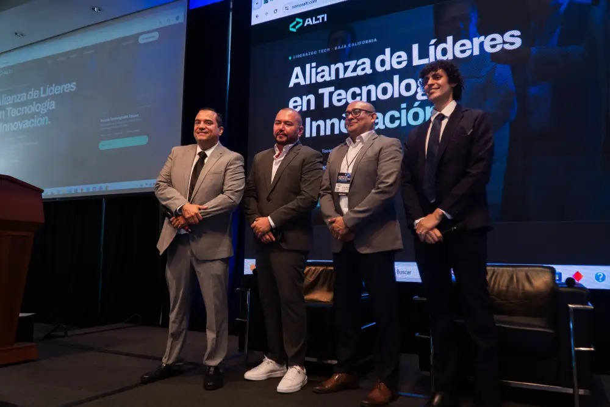
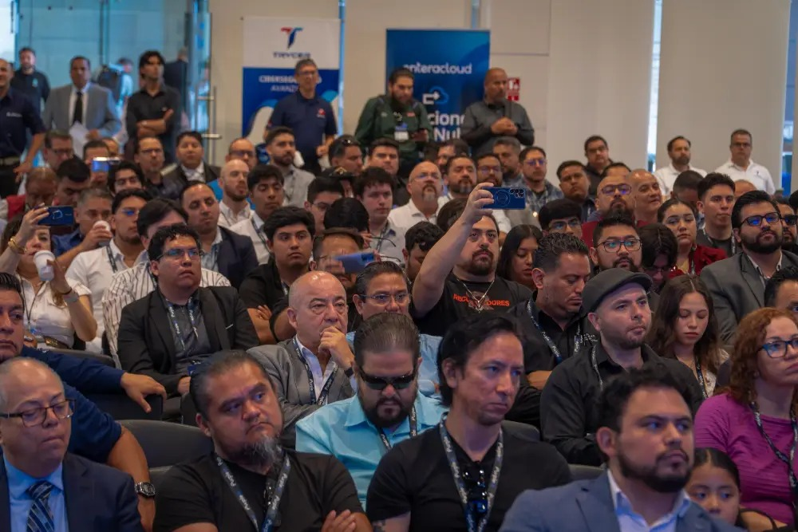

Foro de Tecnología 2026

Sumario.
-
04
Infraestructura · Francisco Olazo
Agentes que analizan y actúan
-
06
Video inteligente · Francisco Banda
De cámaras a neuronas
-
08
IA en producción · Andrés Wong
La IA no alucina: miente
-
10
Panel · Avit, Zebra, Hikvision, Panduit
Cuatro piezas, una operación
-
12
Forense digital · Gustavo Rodríguez
El forense ya no trabaja solo
-
13
Impresión segura · David Juárez
La impresora es una puerta
-
14
Panel · Scitum, Veeam, Grupo Trycer
Tres ejes para 2026
-
16
Comunicaciones · David Modiano
Un solo lugar, cada canal
-
17
Industria · Derly Alí Gutiérrez
Cuando IT heredó la fábrica
-
18
Panel de cierre · Certus, Fisher & Paykel
La IA ya es transversal
Carta editorial
Tijuana ya no es promesa.

La segunda edición del Foro de Tecnología MX reunió en Tijuana a quienes construyen la infraestructura TI de la región. La conclusión fue una: la próxima frontera se construye integrando nube, IA, ciberseguridad y talento.
El foro nació para consolidar a la región como uno de los polos tecnológicos más importantes del país. En una sola jornada se pasó de la nube que ejecuta a la fábrica que ya es responsabilidad de TI.
La palabra “inteligencia artificial” ya se desgastó, dijo Andrés Wong, y casi nadie habló de ella en abstracto. Se habló de agentes con nombre propio, de cámaras que interpretan lo que ven y de pedimentos que se llenan solos.
También de lo pendiente: identidades sin gobierno, respaldos que nadie ha probado y plantas industriales que hoy comparten red con la oficina.
- Nube inteligenteInfraestructura
- Video en el bordeVigilancia
- Agentes en producciónIA
- Identidad y resilienciaCiberseguridad
- IT + OTIndustria

InfraestructuraAgentes que analizan y actúan.
Para Francisco Olazo, de Enteracloud, la nube dejó de ser un lugar donde se alojan cargas. Con IA, ejecuta y automatiza procesos completos.
La plática · Nube inteligente: agentes que analizan y actúan

Nube inteligenteTres pilares, una sola nube.
Olazo construyó con IA una plataforma SaaS sin ser programador profesional: integró APIs, bases de datos y servicios en una fracción del tiempo habitual.
En la demostración, la plataforma descubrió sola la infraestructura y generó inventario, diagramas de red, reportes de seguridad y una comparación de costos entre nubes, en minutos. Sus agentes también reciben solicitudes por WhatsApp y ejecutan scripts de PowerShell.
- 01La nube
Cómputo, redes y almacenamiento redundante. Replicar entre centros de datos sostiene la operación.
- 02Linux
Una capa de control estable para cargas de IA. No es migrar todo: es usarlo donde conviene.
- 03La IA
Analiza, despliega, automatiza y decide. Vuelve inteligente a la infraestructura.
De cámaras a neuronas digitales.
Francisco BandaMopec Security

Video inteligenteMopec Security
La cámara que interpreta.
El CCTV se pensó para guardar video y revisarlo después de un incidente. Ahora el análisis ocurre en el propio dispositivo.
El modelo tradicional dependía de servidores locales, almacenamiento central y horas de revisión manual. El valor de lo grabado se quedaba en el disco.
Las neuronas digitales integran cámara, sensores y procesamiento en el borde. Solo sincronizan metadatos, así que siguen operando aunque la conexión sea limitada.
El panel de control se vuelve un centro de inteligencia: correlaciona dispositivos, muestra métricas en tiempo real y busca con IA entre miles de eventos.
De dos días a
1hora
Capturar un pedimento le tomaba hasta dos días a un agente aduanal. Con SICVD, el sistema que construyó Purple AI sobre Dify y Llama, toma una hora y opera 24/7.
- Agente aduanal, a mano2 días
- SICVD · Dify + Llama, open source1 h
- 9
- sistemas internos integrados
- 24/7
- los archivos se procesan de noche
- 2
- años con el loop agéntico

Inteligencia artificialPurple AI
La IA no alucina: miente.
Está diseñada para responder, tenga o no la información. En un pedimento, donde un error cuesta millones, eso no es tolerable.
Wong prefiere hablar de agentes y les pone nombre; el suyo se llama Maya. Pedirle a un LLM una serie coreana es una cosa; llevarlo a una agencia aduanal, otra.
Su salida es un Source of Truth (Sort): un proceso compara cada pedimento contra el Sort y, si no coincide, el agente vuelve a intentar.
Hasta el registro a este foro lo llevó un agente, Tito. Cuando Eventbrite lo bloqueó, abrió una máquina virtual y siguió a mano.
“El LLM no importa. Importa el contexto, las herramientas y la información que le das al agente.”
Andrés Wong · Purple AI
Cuatro piezas, una operación.
Por separado resuelven problemas distintos. Juntos forman la columna vertebral de un proyecto operativo en planta.
- 01Borde
Zebra: RFID, escaneo y visión artificial procesan en el dispositivo; la red recibe el dato limpio.
- 02Energía
Panduit: FMPS lleva energía hasta dos kilómetros y administra las fallas en tiempo real.
- 03Video
Hikvision: AcuSeek corre en la cámara y busca en el video con lenguaje natural.
- 04Integración
Avit: diagnóstico consultivo, nada de vender cajas, y números para justificar la inversión.
- 2 km
- de energía con FMPS
- ≈ 20%
- menos CAPEX sin IDFs extra para cámaras
- 40%
- de ahorro máximo frente a una instalación eléctrica tradicional
Del dato limpio al zero defect.
En la segunda ronda, el panel pasó de la promesa a la métrica: defectos, seguridad del video y adopción.
Rafael Ríos, Zebra: visión artificial.
La cámara toma unas 100 fotos de piezas buenas y malas, la IA aprende el defecto y aparta como anomalía lo que no conoce. Esos datos permiten atacar el problema desde la raíz.
Miguel Centeno, Hikvision: el video también es IoT.
AcuSeek se apoya en ISO 27000 y NIS. Pero, como dice Chuck Davis, vicepresidente global de ciberseguridad de la marca, el sistema depende también del firewall del cliente.
Enrique Guzmán, Avit: el integrador.
Las cuatro tecnologías no son silos. Lo que convierte lo instalado en resultados es la adopción: capacitación, entrenamiento continuo y actualizaciones.
Síntesis de la redacción a partir del panel
El forense ya no trabaja solo.
Para Gustavo Rodríguez, de Grupo Trycer, la IA ya es un colaborador del investigador: procesa evidencia, encuentra patrones y acelera la investigación.

Grupo Trycer
- Revisar registros
- Buscar patrones
- Redactar el reporte
- Pregunta en lenguaje natural
- Reporte preliminar
- 01La IA procesa
Revisa registros, resume y propone relaciones entre evidencias.
- 02El analista decide
Valida la evidencia, cuida la cadena de custodia y define la respuesta.
- 03Sin comandos
Explora la evidencia con consultas conversacionales.
El futuro del DFIR no es reemplazar al investigador: es sumarle agentes al equipo.
La impresora es una puerta.
No dejarías las llaves de tu casa a la vista. David Juárez Maldonado, de Canon Mexicana, recordó que una impresora guarda datos, correos, contactos y hasta credenciales.
56%
de las organizaciones ha reportado al menos una pérdida de datos relacionada con impresión.Dato citado por David Juárez Maldonado
Sus tres frentes: ransomware, phishing que entra por equipos sin asegurar y la falsa seguridad de quien cree que basta un antivirus. “Volvamos a lo básico”, pidió: monitoreo, actualizaciones y Zero Trust también en periféricos. La respuesta de Canon es uniFLOW, que define quién imprime qué, cómo y cuándo.
- 58 mil mill.
- de intentos de ciberataque al año
- Top 3
- México, entre los más atacados de Latinoamérica
- 4 de 10
- empresas, poco preparadas para la nube
“Cada vez que pones Ctrl+P no es solo imprimir una hoja.”
David Juárez Maldonado · Canon Mexicana
Tres ejes para 2026.
IA, identidades no humanas y dependencia tecnológica redefinen la superficie de ataque. El panel coincidió en por dónde atacarla.
- 01Identidades · Scitum
Las no humanas son APIs, software y agentes. NIST 800-63 y NIST AI 100 ayudan a gobernarlas.
- 02Resiliencia · Veeam
Tener respaldos no es estar protegido: define RPO y RTO, y prueba la recuperación.
- 03Soberanía · Grupo Trycer
Control propio de la infraestructura, el dato y el marco legal. La meta nacional es 2030, y solo es viable en parte.
- 3
- copias de cada dato Diego Garza, Veeam
- 2
- medios distintos Diego Garza, Veeam
- 1
- sitio alterno, inmutable y cifrado Diego Garza, Veeam
Proteger el dato donde esté.
Del perímetro a la identidad: qué cambió, según tres especialistas, y por dónde empezar.
Omar Jaimes Hernández, Scitum.
El riesgo real está en lo que se sube. Documentos corporativos completos terminan en servicios de IA externos, de donde ya no hay manera de retirarlos.
Diego Garza, Veeam.
Durante años el foco fue el perímetro. Hoy el dato vive dentro y fuera del centro de datos, y protegerlo exige identidad, MFA y privilegios por rol.
Gustavo Rodríguez, Grupo Trycer.
Un dato en Querétaro, bajo un régimen cloud de Estados Unidos, puede ser requerido por autoridades extranjeras. Y los atacantes van siempre al eslabón más débil: la cadena de suministro.
Síntesis de la redacción a partir del panel

ComunicacionesUn solo lugar, cada canal.
David Modiano, director comercial de Net2Phone, propuso dejar atrás el conmutador físico: telefonía, WhatsApp, redes, SMS y correo en una sola plataforma en la nube.
Así la atención sigue sin importar el canal y nadie pierde el contexto. Y cada conversación se vuelve información para entender mejor al cliente.
- 01Omnicanal
Una plataforma 100% en la nube para todos los canales.
- 02Agentes que ejecutan
Clasifican, validan, canalizan y acompañan el flujo completo, 24/7.
- 03Supervisión
Métricas en tiempo real para medir el servicio y decidir con datos.
Cuando IT heredó la fábrica.
Durante décadas, las plantas operaron aisladas para proteger la producción. Derly Alí Gutiérrez Arellano, de Fortinet, explicó qué cambia cuando IT y OT comparten red.
La Industria 4.0 y la IA integran ambos mundos: más eficiencia, pero también una superficie de exposición mucho mayor.
La misma IA ayuda a cuidar la planta: analiza datos de sensores, redes y sistemas de control, detecta anomalías y alerta temprano.
Pero en OT manda la disponibilidad. Toda protección debe tocar lo menos posible la producción y convivir con equipos que operan durante décadas.
- 01Más conexiones
Cada dispositivo conectado es un posible punto de acceso.
- 02Nuevas superficies
Equipos antes aislados hoy hablan con aplicaciones corporativas.
- 03Disponibilidad
Un incidente detiene líneas y puede comprometer la seguridad física.

La IA ya es transversal.
Noé Velasco · Christian Picos · Fernando Magaña
Para el panel de Certus Laboratorio y Fisher & Paykel Healthcare, transformarse ya no es sumar tecnología, sino integrarla, con la ciberseguridad como habilitador y resultados medibles.
Participaron
- Enteracloud
- Mopec Security
- Purple AI
- Avit
- Zebra
- Hikvision
- Panduit
- Grupo Trycer
- Canon Mexicana
- Scitum
- Veeam
- Net2Phone
- Fortinet
- Certus Laboratorio
- Fisher & Paykel
Ocho ideas para el lunes.
- 01
Usa la IA para potenciar a TI, no para reemplazarla.
Francisco Olazo - 02
Procesa en el borde y manda solo metadatos.
Francisco Banda - 03
Dale a tu agente una fuente de verdad contra la cual validar.
Andrés Wong - 04
Integra: borde, energía y video no son silos.
Enrique Guzmán - 05
Deja que la IA procese; el criterio sigue siendo tuyo.
Gustavo Rodríguez - 06
Trata cada impresora como un punto de exposición.
David Juárez Maldonado - 07
Prueba tu recuperación; no la supongas.
Diego Garza - 08
Protege la planta sin detener la producción.
Derly Alí Gutiérrez

Scroll para acercar · con el click sostenido mueves la página Desliza la página para avanzar